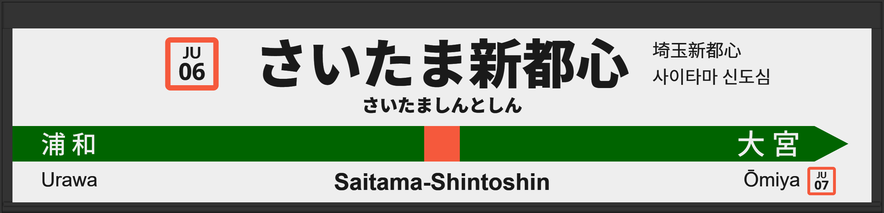

| ←浦和 | ■ 宇都宮線 | 大宮→ |
|---|
2000年4月、開業と共に初期型ATOS放送を導入する。その後、3番線が津田英治氏、4番線が向山佳衣子氏になる。
2004年9月に常磐初期型に更新、スタンドアローンから、連動放送に変わる。
2014年頃、常磐改良型に更新されるが、同年12月に宇都宮型に更新され、3番線の声優が津田英治氏から田中一永氏に更新される。
2019年1月に宇都宮改良型に更新される。
| 3 | ■ 宇都宮線 上野方面 |
3番線接近放送 |
常磐初期型でした。 津田英治氏です。 |
|---|---|---|---|
| 4 | ■ 宇都宮線 盛岡方面 高崎方面 |
4番線接近放送 |
常磐初期型でした。 向山佳衣子氏です。 |
| 3 | ■ 宇都宮線 上野方面 |
3番線接近放送 |
初期型でした。 放送は「普通 上野行」です。 向山佳衣子氏です。 |
|---|---|---|---|
| 4 | ■ 宇都宮線 盛岡方面 高崎方面 |
4番線接近放送(普通 小金井行) 4番線接近放送(普通 宇都宮行) 4番線接近放送(普通 黒磯行) 4番線接近放送(普通 籠原行) 4番線接近放送(普通 本庄行) 4番線接近放送(普通 高崎行) 4番線接近放送(普通 渋川行) 4番線接近放送(普通 伊勢崎行) |
初期型でした。 これらの接近放送に含まれる行先パーツはすべて旧パーツです。そのため現在は使われておりません。現在の物よりも単体パーツのテンションが低いです。 津田英治氏です。 |